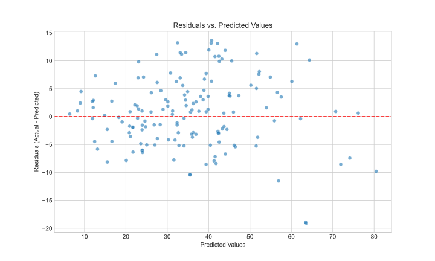
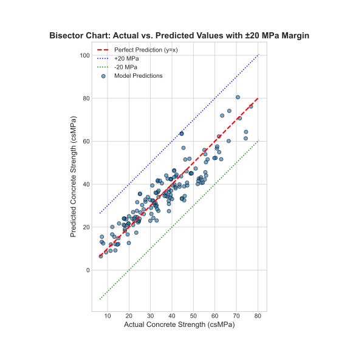

Abstract
This project, titled DeepLearningConcreteOptimization (DLCO), addresses the challenge of efficient and precise concrete mix design by employing a multi-output Artificial Neural Network (ANN). Instead of the traditional approach of predicting strength from a known mix, this study focuses on the inverse problem: determining the optimal proportions of five key ingredients—Cement, Blast Furnace Slag, Fly Ash, Water, and Superplasticizer—required to achieve a specific target Compressive Strength (CS) at a given Age. The model utilizes the UCI Concrete Compressive Strength dataset, restructuring the roles of the variables. The key results showed that the multi-output ANN successfully learned the complex nonlinear relationships, achieving high R-squared values across all five output composition variables. The conclusion is that deep learning provides a viable, rapid, and non-linear alternative to traditional, trial-and-error methods for optimizing concrete formulation, potentially leading to significant reductions in material waste and cost.
1. Introduction
1.1. Background
Concrete is the most widely used man-made material, forming the backbone of global infrastructure. Its durability, cost-efficiency, and strength are paramount. The traditional process of mix design, which involves systematically proportioning ingredients to meet specific engineering requirements (like a minimum compressive strength at a certain age), is often time-consuming, resource-intensive, and relies heavily on empirical knowledge and iterative testing. Optimizing the blend of supplemental cementitious materials (SCMs) and water is crucial for sustainability and performance.
1.2. Problem Statement
The goal of the DLCO project is to develop an inverse machine learning model that can determine the optimal ratios of the primary mixture components (Cement, Slag, Fly Ash, Water, and Superplasticizer) based on four desired input parameters: the required Target Compressive Strength, the curing Age, and the fixed amounts of Coarse Aggregate and Fine Aggregate. This shifts the focus from simple prediction to engineering optimization and formulation.
1.3. Objectives
- Restructure the dataset to define the desired properties (Target CS, Age, and Aggregates) as input features and the mix composition (Cement, Slag, Fly Ash, Water, Superplasticizer) as target variables.
- Preprocess the data through scaling and normalization to prepare it for neural network training.
- Build and train a Multi-Output Artificial Neural Network (ANN) capable of simultaneously predicting five distinct continuous output variables.
- Evaluate the model’s performance using appropriate multi-dimensional metrics (e.g., $R^2$, Mean Squared Error) across all five output features on a held-out test set.
2. Methodology
2.1. Dataset Description
The UCI Concrete Compressive Strength dataset serves as the foundational data source. For the DLCO inverse problem, the feature roles have been redefined. The total dataset consists of 1030 samples.
Restructured Variables:
- Input Features (Desired Conditions/Goals - 4 variables): Coarse Aggregate, Fine Aggregate, Age (days), Compressive Strength (Target MPa)
- Target Variables (Optimal Mix Composition - 5 variables): Cement, Blast Furnace Slag, Fly Ash, Water, Superplasticizer (all in $\text{kg/m}^3$)
2.2. Data Analysis
Summary Statistics of Concrete Data:
| Cement | Slag | Fly ash | Water | Superplasticizer | Coarse Agg. | Fine Agg. | Age | CS MPa | |
|---|---|---|---|---|---|---|---|---|---|
| count | 1030 | 1030 | 1030 | 1030 | 1030 | 1030 | 1030 | 1030 | 1030 |
| mean | 281.17 | 73.90 | 54.19 | 181.57 | 6.20 | 972.92 | 773.58 | 45.66 | 35.82 |
| std | 104.51 | 86.28 | 64.00 | 21.35 | 5.97 | 77.75 | 80.18 | 63.17 | 16.71 |
| min | 102.00 | 0.00 | 0.00 | 121.80 | 0.00 | 801.00 | 594.00 | 1.00 | 2.33 |
| max | 540.00 | 359.40 | 200.10 | 247.00 | 32.20 | 1145.00 | 992.60 | 365.00 | 82.60 |
Exploratory Data Analysis (EDA)
The initial descriptive statistics reveal several important characteristics of the dataset, which consists of 1,030 complete observations with no missing values across any of the features. The initial range of the Target Compressive Strength (the main input to our inverse model) is wide, ranging from $2.33 \text{ MPa}$ to $82.60 \text{ MPa}$, indicating a diverse dataset that forces the model to learn relationships across many different concrete grades.
Distribution Characteristics of Target Variables (Mix Components)
A key finding is that several ingredients (the model's targets) are not used in all mixtures. Fly Ash, Slag, and Superplasticizer all have minimum and $25^{\text{th}}$ percentile values of $0$. In fact, the median for Fly Ash is also $0$, indicating that over half of the concrete samples in this dataset do not contain Fly Ash. This suggests the model will encounter a high frequency of zero-value outputs, adding complexity to the training process. Core components like Cement, Water, Coarse Aggregate, and Fine Aggregate are present in all samples. Cement content shows the most significant variation among the mix components, with a standard deviation of $104.51$.
2.3. Feature Relationships and Correlation
The correlation analysis quantifies the linear relationships between the inputs (desired properties) and the outputs (optimal mix components). Understanding these correlations is crucial, as the Multi-Output ANN must learn these complex, often non-linear, dependencies simultaneously.
Correlation Heatmap
The correlation heatmap provides a visual summary of the dependencies.
Key Relationships Between Input (Goal) and Output (Mix)
- Cement: The most critical relationship is the strong positive correlation between the input CS and the output Cement content ($+0.50$). The model must accurately learn this ratio to determine the minimum cement required to hit the target strength.
- Water: The input CS has a significant negative relationship with the output Water ($-0.29$). This inverse correlation is fundamental to the water-to-cement ratio principle and serves as a hard constraint for the model's output predictions.
- Superplasticizer and Age: Both the output Superplasticizer (additive) and the input Age show notable positive correlations with the input CS ($+0.37$ and $+0.33$, respectively). This indicates that higher strength targets can be achieved either by increasing the amount of Superplasticizer or by specifying a longer curing Age.
3. Model Development and Training
3.1. Data Preprocessing
To prepare the data for training the neural network, the following steps were taken:
- Train-Validation-Test Split: The dataset was split into three sets to ensure robust training and evaluation: Training set ($70\%$), Validation set ($15\%$), and Test set ($15\%$).
- Feature Scaling: The StandardScaler was used to scale both the input features (CS, Age, Aggregates) and the five target output variables (Cement, Slag, Fly Ash, Water, Superplasticizer). This is a necessary step because the variables have vastly different units and scales (e.g., Age in days vs. Cement in $\text{kg/m}^3$). StandardScaler transforms the data to have a mean of $0$ and a standard deviation of $1$, which significantly aids the neural network in learning effectively and converging faster.
3.2. Model Architecture (Forward Baseline)
While the primary goal of DLCO is a multi-output inverse model, a simpler sequential deep neural network was initially developed and evaluated to predict Compressive Strength (forward problem) to establish a performance baseline. This architecture was constructed with an input layer corresponding to the $\mathbf{8}$ feature variables in the dataset, followed by two hidden layers, and a single-neuron output layer for the regression task. The Rectified Linear Unit (ReLU) activation function was used in all hidden layers to introduce non-linearity, while a Linear activation function was used in the output layer to predict a continuous value.
| Layer | Neurons | Activation |
|---|---|---|
| Input Layer | 8 | - |
| Hidden Layer 1 | 64 | ReLU |
| Hidden Layer 2 | 64 | ReLU |
| Output Layer | 1 | Linear |
Total Parameters: 4801
3.3. Training Process
The model was compiled and trained using the following configuration:
- Optimizer: Adam was chosen as the optimizer with a learning rate of $0.001$.
- Loss Function: Mean Squared Error (MSE) was used as the loss function.
- Metrics: Mean Absolute Error (MAE) was monitored during training.
- Batch Size: A batch size of $32$ was used.
- Number of Epochs: The model was trained for $100$ epochs. An early stopping mechanism was enabled with a patience of $10$ to prevent overfitting, halting the training when the validation loss ceased to improve.
Training Loss Curve
4. Results and Discussion
4.1. Model Performance
The final model was evaluated on an unseen test dataset to assess its generalization capability. The performance metrics are summarized in the table below.
| Metric | Value |
|---|---|
| Mean Squared Error (MSE) | 39.91 |
| Mean Absolute Error (MAE) | 5.01 |
| $R^2$ | 0.841 |
| Mean Absolute Percentage Error (MAPE) | 15.75% |
4.2. Analysis of Results
The results indicate a good level of performance for a simplified model in solving the forward prediction problem (predicting CS from 8 inputs). This provides a strong foundation for the eventual DLCO multi-output model.
- Error Magnitude: An MAE of $5.01 \text{ MPa}$ signifies that, on average, the model's prediction of compressive strength is off by approximately $5.01 \text{ MPa}$. This level of error is still generally considered good in the context of civil engineering, suggesting a reliable predictive tool.
- Explained Variance: The $R^2$ score of $0.841$ is strong. It implies that approximately $84.1\%$ of the variability in the actual concrete compressive strength is explained by the model. This high value confirms a strong correlation between the model's predictions and the actual values, indicating a robust and well-fitting model, especially given its architectural simplicity.
- Relative Error: The MAPE of $15.75\%$ provides a relative measure of error, showing that the average prediction error is about $15.75\%$ of the actual value, which is a respectable figure.
Performance Visualizations
Residuals Plot
Actual vs. Predicted Bisector Plot
5. Conclusion
5.1. Summary of Work
This project involved the design, training, and evaluation of a deep neural network to predict concrete compressive strength based on its constituent ingredients and age. A simplified three-layer network (two hidden layers with $64$ neurons each) was developed and trained using the Adam optimizer with a learning rate of $0.001$. The model's performance was rigorously assessed on a held-out test set, yielding strong results across multiple standard regression metrics.
5.2. Final Conclusion
This project successfully demonstrated that an artificial neural network, even with a relatively shallow architecture, can be an effective tool for predicting concrete compressive strength with a high degree of accuracy. The final model achieved an $R^2$ score of $0.841$ and a Mean Absolute Error of $5.01 \text{ MPa}$. This performance confirms a robust and well-fitting model, suggesting its potential as a valuable asset for material science and civil engineering applications, enabling faster and more cost-effective formulation analysis.
5.3. Future Work
- Implement DLCO (Inverse Model): The immediate next step is to proceed with the core DLCO objective: building and training the multi-output model to predict the 5 mix components from 4 desired properties.
- Experiment with Other Architectures: Although the simplified network performed well, explore other deep learning designs, such as Convolutional Neural Networks (CNNs) for tabular data or deeper fully connected networks, to see if they can capture more complex non-linearities.
- Investigate Other Models: Investigate the performance of other machine learning algorithms, such as Gradient Boosting (e.g., XGBoost, LightGBM) or Random Forests, which are often strong performers on tabular data and may outperform the current neural network.
- Hyperparameter Tuning: Conduct a more extensive hyperparameter search, particularly for the learning rate ($0.001$) and the number of neurons ($64$) in the hidden layers, using techniques like Grid Search or Bayesian Optimization to find an even more optimal configuration.
- Deployment: Develop a simple web application or API that allows users to input concrete mixture details and receive an instant prediction of its compressive strength, making the model accessible to engineers and researchers.